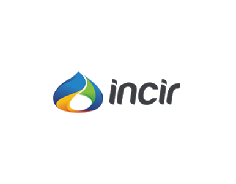

<div id="content">

    {%include top_page_header.html%}
    <div class="content-wrap">


        <div class="container clearfix">


            <div id="portfolio" class="clearfix">


                <div class="portfolio-item pf-uielements">
                        
                            <div class="portfolio-image">
                            
                                <a href="#"></a>
                                
                                <div class="portfolio-overlay">
                                
                                    <div class="portfolio-overlay-wrap">
                                
                                        <p>Proje yönetimi ve geliştirme.</p>
                                        
                                        <span><span></span></span>
                                        
                                        
                                    
                                    </div>
                                    
                                    <div class="p-overlay-icons clearfix">
                                    
                                        <a href="http://www.incir.com" class="p-o-link"></a>
                                    
                                    </div>
                                
                                </div>
                            
                            </div>
                            
                            <div class="portfolio-title">
                            
                                <h3 title="İncir"><a href="http://www.incir.com">İncir</a></h3>
                            
                            </div>
                        
                        </div>


            </div>

        </div>


    </div>


</div>
